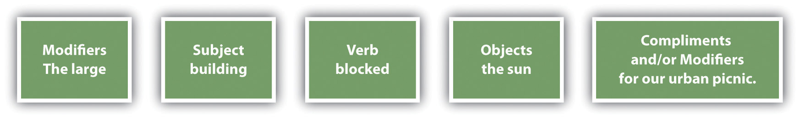

If you learned English as a second language and you regularly speak a language other than English, this appendix is for you. It also provides a refresher course on many of the elements in Chapter 15 "Sentence Building", Chapter 16 "Sentence Style", Chapter 17 "Word Choice", Chapter 18 "Punctuation", Chapter 19 "Mechanics", and Chapter 20 "Grammar".
In English, words are used in one of eight parts of speech: noun, pronoun, adjective, verb, adverb, conjunction, preposition, and interjection. This table includes an explanation and examples of each of the eight parts of speech.
| Noun | Person, place, or thing | Wow! After the game, silly Mary ate her apples and carrots quickly. | Iowa | book | arm |
| horse | idea | month | |||
| Pronoun | Takes the place of a noun | Wow! After the game, silly Mary ate her apples and carrots quickly. | he | it | I |
| her | my | theirs | |||
| Adjective | Describes a noun or pronoun | Wow! After the game, silly Mary ate her apples and carrots quickly. | sticky | funny | crazy |
| long | cold | round | |||
| Verb | Shows action or state of being | Wow! After the game, silly Mary ate her apples and carrots quickly. | run | jump | felt |
| think | is | gone | |||
| Adverb | Describes a verb, another adverb, or an adjective and tells how, where, or when something is done | Wow! After the game, silly Mary ate her apples and carrots quickly. | slowly | easily | very |
| often | heavily | sharply | |||
| Conjunction | Joins words, phrases, and clauses | Wow! After the game, silly Mary ate her apples and carrots quickly. | and | because | but |
| since | or | so | |||
| Preposition | First word in a phrase that indicates the relationship of the phrase to other words in the sentence | Wow! After the game, silly Mary ate her apples and carrots quickly. | in | on | to |
| after | at | over | |||
| Interjection | A word that shows emotion and is not related to the rest of the sentence | Wow! After the game, silly Mary ate her apples and carrots quickly. | Hey | Wow | Look |
| Super | Oh | Yuck |
The simplest level of English word order within a sentence is that subjects come first followed by verbs and then direct objects.
Figure 21.1

When you have more complicated sentences, use the following general order.
Figure 21.2
When an English sentence includes more than one adjective modifying a given noun, the adjectives have a hierarchy you should follow. The adjectives that modify the noun within Table 21.1 "Hierarchical Order of Adjectives" show that hierarchical order. You should, however, keep a string of adjectives to two or three. The example includes a longer string of adjectives simply to clarify the word order. Using this table, you can see that “the small thin Methodist girl…” would be correct but “the young French small girl…” would be incorrect.
Some languages, such as Spanish, insert “no” before a verb to create a negative sentence. In English, the negative is often indicated by placing “not” after the verb or in a contraction with the verb.
I can’t make it before 1:00 p.m.
Incorrect example: I no can make it before 1:00 p.m.
Nouns that name separate things or people that you can count are called count nouns. Nouns that name things that cannot be counted unless additional words are added are called noncount nouns. You need to understand count and noncount nouns in order to use the nouns correctly with articles, in singular and plural formations, and in other situations. Some nouns can serve as either count or noncount nouns.
In English, nouns are identified or quantified by determiners. Articles, such as a, an, and the, are one type of determiner. Use the following guidelines to alleviate confusion regarding whether to use an article or which article to use.
I have a dog at home, also. (The word “dog” is a nonspecific noun since it doesn’t refer to any certain dog.)
(before a vowel): Carrie gave everyone an apple at lunch.
(before a consonant; with proper noun): He was wearing a Texas shirt.
I heard every noise all night long.
I tried each Jell-O flavor and liked them all.
(with count noun): I am going to eat that apple.
(with noncount noun): I am not too excited about this weather.
I didn’t have any donuts at the meeting because he ate them all.
Do you have enough donuts for everyone?
He ate some donuts at the meeting.
I’d like a little meatloaf, please.
There’s not much spaghetti left.
(with noncount noun): The weather is beautiful today.
(with singular count noun): Who opened the door?
(with plural count noun): All the houses had brick fronts.
I have a few books you might like to borrow.
Daryl and Louise have been traveling for several days.
Are those shoes yours?
English count nouns have singular and plural forms. Typically, these nouns are formed by adding -s or -es. Words that end in -ch, -sh, or -s usually require the addition of -es to form the plural. Atypical plurals are formed in various ways, such as those shown in the following table.
| Singular Nouns | Plural Nouns |
|---|---|
| dog | dogs (-s added) |
| table | tables (-s added) |
| peach | peaches (-es added) |
| wish | wishes (-es added) |
| kiss | kisses (-es added) |
| man | men (atypical) |
| sheep | sheep (atypical) |
| tooth | teeth (atypical) |
| child | children (atypical) |
| alumnus | alumni (atypical) |
| leaf | leaves (atypical) |
Proper nouns are typically either singular or plural. Plural proper nouns usually have no singular form, and singular proper nouns usually have no plural form.
| Singular Proper Nouns | Plural Proper Nouns |
|---|---|
| Kentucky | Sawtooth Mountains |
| Alex | The Everglades |
Noncount nouns typically have only one form that is basically a singular form. To quantify them, you can add a preceding phrase.
| Noncount Nouns | Sentences with Noncount Nouns and Quantifying Phrases |
|---|---|
| gas | We put twelve gallons of gas in the car this morning. |
| anguish | After years of anguish, he finally found happiness. |
You can practice conjugating many English verbs to increase your awareness of verb tenses. Use this format for the basic conjugation:
You can also practice completing these five forms of English. A mixture of tenses is used to show that you can practice the different forms with any tense.
See Chapter 15 "Sentence Building", Section 15.2 "Choosing Appropriate Verb Tenses" for an in-depth overview of verb tenses.
People who are new to English often experience confusion about which verb forms can serve as the verb in a sentence. An English sentence must include at least one verb or verb phrase and a tense that relays the time during which the action is taking place. Verbals (such as gerunds and infinitives) should not be confused with verbs.
Correct example: Roger enjoys driving the RV.
Incorrect example: Roger driving the RV.
Correct example: Kyle decided to write a long message.
Incorrect example: Kyle to write a long message.
Past tense correct example: Yesterday, I called you at 5:00 p.m.
Past tense incorrect example: Yesterday, I call you at 5:00 p.m.
Future tense correct example: The next time it rains, I will bring my umbrella.
Future tense incorrect example: The next time it rains, I bring my umbrella.
Present tense correct example: Come in and get warm.
Present tense incorrect example: Come in and got warm.
See Chapter 15 "Sentence Building", Section 15.2 "Choosing Appropriate Verb Tenses" for a more extensive overview of verb tenses.
Figure 21.3
The English language includes nine main modal auxiliary verbs that are used with other verbs. These modals, shown in the wheel in four pairs and a single, can refer to past, present, or future tense based on the verbs that are used with them. The modals themselves do not change form to change tense. As shown in the following table, you can use modals to express an attitude in regard to the action or general situation of the sentence.
| Modal Function | Format for Present or Future Tense | Format for Past Tense |
|---|---|---|
| Advisability | should or ought to + base verb | should or ought to + have + past participle |
| You should take the time to visit Yellowstone. | You ought to have taken the time to visit Yellowstone. | |
| Capability | can, am able to, is able to, or are able to + base verb | could, was able to, were able to + base verb or past participle |
| Aisha can tell you who was at the party. | Saul was able to walk on the beam without falling off. | |
| Deduction | must, has to + base verb | must + have + past participle |
| Hank must know Spanish and French. | Lucy must have driven through the night. | |
| Forbiddance | must + not + base verb | N/A |
| You must not take his food. | ||
| Expectation | should + base verb | should + have + past participle |
| The sun should set about 7:15 today. | The boys should have finished their ball game by now. | |
| Intention | will or shall + base verb | would + base verb |
| I will meet you at the theater. | I said I would finish sometime today. | |
| Necessity | must or have to + base verb | had to+ base verb |
| I must finish cleaning before they arrive. | Greg had to get gas before we started the trip. | |
| Past habit | N/A | would or used to + base verb |
| When I worked there, I used to eat at Marvy’s every day. | ||
| Permission request | can, could, may, or might + base verb (in question format) | might or could + base verb |
| Could I go with you? | My parents said I could use their car next week. | |
| Polite request | could or would + base verb (in question format) | N/A |
| Would you please hand me page 45? | ||
| Possibility/uncertainty | may or might + base verb | might + have + past participle |
| Alice might be at work by 6:00 a.m. | I don’t remember, but I might have been the one sitting next to him that night. | |
| Speculation | could, might, or would + base verb | could, might, or would + have + past participle |
| If he conditions enough, he could win his race. | There could have been some real money in that deal we almost made. |
Gerunds are nouns formed by adding -ing to a verb, such as running. Infinitives are nouns formed from the “to” form of a verb, such as to run. These two noun forms are called verbals, because they are formed from verbs. Experience with English will teach you which form to use in which situation. In the meantime, the following lists provide a brief overview.
See Chapter 20 "Grammar", Section 20.1.7 "Deciding If Relative Pronouns Take a Singular or Plural Verb" for more information regarding gerunds and infinitives.
Participles are verb forms that combine with auxiliary verbs to create different tenses.
To form perfect tenses, use had, has, or have with the past participle.
Example: My dog has eaten twice today.
To form progressive tenses, use a form of the verb to be with the present participle, or gerund.
Example: My dog is eating a treat.
To write in passive voice, use a form of the verb to be with the past participle.
Example: The treat was eaten by my dog.
See Chapter 15 "Sentence Building", Section 15.2 "Choosing Appropriate Verb Tenses" for a more extensive overview of the relationships between participles and verb tenses, and see Chapter 16 "Sentence Style", Section 16.3 "Using Subordination and Coordination" for more on passive voice constructions.
Adverbs often end in -ly and modify verbs, other adverbs, and adjectives. As a rule, you should place an adverb next to or close to the word it modifies, although adverbs can be placed in different positions within a sentence without affecting its meaning.
Before the verb: “He slowly walked to the store.”
After the verb: “He walked slowly to the store.”
At the beginning of the sentence: “Slowly, he walked to the store.”
At the end of the sentence: “He walked to the store slowly.”
Between an auxiliary and main verb: “He was slowly walking to the store.”
Some adverbs, however, have a different meaning based on where they are placed. You should check to make sure that your placement carries the intended meaning.
“She only loved him.”
Translation: “The only emotion she felt toward him was love.”
“Only she loved him.”
Translation: “The only person who loved him was her.”
“She loved only him.” or “She loved him only.”
Translation: “The only person she loved was him.”
Some adverbs simply do not work between the verb and the direct object in a sentence.
Acceptable adverb placement: She barely heard the noise.
Unacceptable adverb placement: She heard barely the noise.
Adjectives modify nouns and in some more heavily inflected languages, the endings of adjectives change to agree with the number and gender of the noun. In English, adjectives do not change in this way. For example, within the following sentences, note how the spelling of the adjective “eager” remains the same, regardless of the number or the gender of the noun it modifies.
The eager boy jumped the starting gun.
The eager boys lined up.
The eager girls eyed the starter.
As in these sentences, adjectives usually are placed before a noun. The noun can be the subject, as in the preceding example, or a direct object, as in the following sentence.
Harold admired his shiny red car.
Adjectives can also be placed after a linking verb. The adjective still modifies a noun but is not placed next to the noun, as in the following example.
The weather was miserable.
When two or more adjectives are used to modify a single noun, they should be used in a set order, as shown in Table 21.1 "Hierarchical Order of Adjectives". Even though the table shows ten levels within the hierarchy, you should limit your adjectives per noun to two or three.
Table 21.1 Hierarchical Order of Adjectives
| Determiner | Opinion or Assessment | Physical Description | Nationality | Religion | Material | Noun | |||
| Size | Shape | Age | Color | ||||||
| The | pretty | small | thin | young | white | French | Methodist | plastic | girl |
When using an adverb and adjective together with a noun, you should typically place the adverb first, followed by the adjective, and then the noun.
the strikingly golden tree
For more information about adverbs and adjectives, see Chapter 20 "Grammar", Section 20.6 "Using Adverbs and Adjectives".
In English, adjectives have comparative and superlative forms that are used to more exactly describe nouns.
Joey is tall, Pete is taller than Joey, and Malik is the tallest of the three boys.
One common way to form the comparative and superlative forms is to add -er and -est, respectively, as shown in the preceding example. A second common method is to use the words more and most or less and least, as shown in the following example.
Lucy is eager to start, Callie is more eager, and Shannon is the most eager.
Some adjectives do not follow these two common methods of forming comparatives and superlatives. You will simply have to learn these irregular adjectives by heart. Some of them are listed Table 21.2 "Sample Adjectives That Form Superlatives Using Irregular Patterns". Notice that some are irregular when used with a certain meaning and not when used with a different meaning. See Chapter 20 "Grammar", Section 20.6.3 "Using Comparatives and Superlatives" for more examples of irregular adjectives.
Table 21.2 Sample Adjectives That Form Superlatives Using Irregular Patterns
| much (noncount nouns) | more | most |
| many (count nouns) | more | most |
| little (size) | littler | littlest |
| little (number) | less | least |
| old (people and things) | older | oldest |
| old (family members) | elder | eldest |
Some adjectives’ comparatives and superlatives can be formed with either -er and -est or with more and most (or less and least). In these cases, choose the version that works best within a given sentence.
Table 21.3 Sample Adjectives That Can Form Superlatives Using -er and -est or More and Most
| clever | cleverer | cleverest |
| clever | more clever | most clever |
| gentle | gentler | gentlest |
| gentle | more gentle | most gentle |
| friendly | friendlier | friendliest |
| friendly | more friendly | most friendly |
| quiet | quieter | quietest |
| quiet | more quiet | most quiet |
| simple | simpler | simplest |
| simple | more simple | most simple |
Some adjectives do not have comparative and superlative forms since the simplest form expresses the only possible form.
Indefinite adjectives give nonspecific information about a noun. For example, the indefinite article few indicates some, but not an exact amount. Indefinite adjectives are easily confused with indefinite pronouns since they are the same words used differently. An indefinite pronoun replaces a noun. An indefinite adjective precedes a noun or pronoun and modifies it. It is important for you to understand the difference between indefinite adjectives and pronouns to assure you are saying what you mean. Some common indefinite adjectives include all, any, anything, each, every, few, many, one, several, some, somebody, and someone.
Indefinite adjective: We are having some cake for dessert.
Indefinite pronoun: I like cake. I’ll have some, please.
Indefinite adjective: You can find a state name on each quarter.
Indefinite pronoun: I have four Illinois quarters, and each is brand new.
Since linking verbs express a state of being instead of an action, adjectives are used after them instead of adverbs. An adjective that follows a linking verb is referred to as a predicate adjective. Be careful not to use an adverb simply because of the proximity to the verb.
Correct (adjective follows linking verb): Kelly is selfish.
Incorrect (adverb follows linking verb): Kelly is selfishly.
Correct (adjective follows linking verb): Beth seems eager.
Incorrect (adverb follows linking verb): Beth seems eagerly.
Clauses include both subjects and verbs that work together as a single unit. When they form stand-alone sentences, they’re called independent clauses. An independent clause can stand alone or can be used with other clauses and phrases. A dependent clause also includes both a subject and a verb, but it must combine with an independent clause to form a complete sentence.
| Types of Dependent Clauses | Descriptions | Examples |
|---|---|---|
| Adverb clause | Serves as an adverb; tells when, how, why, where, under what condition, to what degree, how often, or how much | To avoid sunburn, she plastered her body with sunscreen. |
| Noun clause | Serves as a noun when attached to a verb | That she would win the race seemed quite likely. |
| She thought that she would win the race. | ||
| Adjective clause (also called a relative clause) | Begins with a relative pronoun (that, who, whom, whose, which) or a relative adverb (when, where, why); functions as an adjective; attaches to a noun; has both a subject and a verb; tells what kind, how many, or which one | The day that he lost his watch was an unlucky day.* |
| The house where they lived is gone. | ||
| Appositive clause | Functions as an appositive by restating a noun or noun-related verb in clause form; begins with that; typical nouns involved include possibilities such as assumption, belief, conviction, idea, knowledge, and theory | The idea that Josie will someday be taller than me is crazy. |
| *In some instances, the relative pronoun or adverb can be implied (e.g., “The day he lost his watch was an unlucky day”). | ||
Phrases are groups of words that work together as a single unit but do not have a subject or a verb. English includes five basic kinds of phrases.
| Types of Phrases | Descriptions | Examples |
|---|---|---|
| Noun phrase | Multiple words serving as a noun | Darcy ate a ham sandwich. |
| Verb phrase | Used as the verb in sentences that are in the progressive and perfect tenses | The class should have started a half-hour earlier. |
| Prepositional phrase | Begins with a preposition (covered in more depth in Section 21.9 "Gerunds and Infinitives") | Work will be easier after the holiday rush. |
| Adjective phrase | Functions as an adjective; might include prepositional phrases and/or nouns | My brother is very tall and handsome. |
| Adverb phrase | Functions as an adverb; might include prepositional phrases and/or multiple adverbs | Let’s go walking after dinner. |
| Ignacia walked wearily and unsteadily. |
An adjective clause gives information about a preceding noun in a sentence. Look at the following examples.
The car that Richie was driving was yellow.
Des Moines, where I live, is in Iowa.
Mr. Creeter, whose brother I know, is the new math teacher.
Like many other adjective clauses, these begin with a relative adjective (which, who, whom, whose, that) or a relative adverb (when or where). When you use a relative clause to describe a noun, make sure to begin it with one of the seven relative adjectives and adverbs listed in the previous sentence.
Prepositions are words that show the relationships between two or more other words. Choosing correct prepositions can be challenging, but the following examples will help clarify how to use some of the most common prepositions.
| Types of Prepositions | Examples of Prepositions | How to Use | Prepositions Used in Sentences |
|---|---|---|---|
| Time | at | Use with hours of the day and these words that indicate time of day: dawn, midnight, night, and noon | We will eat at 11:30. |
| We will eat at noon. | |||
| by | Use with time words to indicate a particular time | I’ll be there by 5:00. | |
| I’ll be finished by October. | |||
| in | Use with the and these time-of-day words: afternoon, evening, and morning | We’ll start in the morning. | |
| Use on its own with months, seasons, and years | The rainy season starts in June. | ||
| on | Use with days of the week | I’ll see you on Friday. | |
| Location | at | Use to indicate a particular place | I’ll stop at the dry cleaners. |
| in | Use when indicating that an item or person is within given boundaries | My ticket is in my pocket. | |
| by | Use to mean “near a particular place” | My desk is by the back door. | |
| on | Use when indicating a surface or site on which something rests or is located | Place it on the table, please. | |
| My office is on Lincoln Boulevard. | |||
| Logical relationships | of | Use to indicate part of a whole | I ate half of the sandwich. |
| Use to indicate contents or makeup | I brought a bag of chips. | ||
| for | Use to show purpose | Jake uses his apron for grilling. | |
| State of being | in | Use to indicate a state of being | I am afraid that I’m in trouble. |
Some languages, especially those that make greater use of inflection, do not include all the sentence parts that English includes. Take special care to include those English parts that you might not be used to including in your native language. The following table shows some of these words that are needed in English but not in other languages.
| Sentence Parts | Language Issues |
|---|---|
| Articles | Neither Chinese nor Arabic includes articles, such as a and an, so people with Chinese or Arabic as a first language have to take great care to learn to use articles correctly. |
| Verbs | Many languages have verb tense setups that vary from English, so most new English learners have to be very careful to include auxiliary verbs properly. For example, Arabic does not include the verb “to be,” so native speakers of Arabic who learn English have to take special care to learn the usage of “to be.” An Arabic speaker might say, “The girl happy,” instead of, “The girl is happy.” |
| Subjects | Spanish and Japanese do not include a subject in every sentence, but every English sentence requires a subject (except in commands where the subject you is understood: “Go get the box”). |
| Expletives | Inverted English sentences can cause problems for many new English speakers. For example, you could say, “An apple is in the refrigerator.” But in typical English, you would more likely say, “There is an apple in the refrigerator.” This version is an inverted sentence, and “there” is an expletive. Many new English learners might invert the sentence without adding the expletive and say, “Is an apple in the refrigerator.” |
| Plurals | Neither Chinese nor Thai includes plurals, but English does. So many new English learners have to take great care to differentiate between singular and plural forms and to use them at the appropriate times. |
| Subject pronouns | In Spanish, the subject pronoun is often not used, so Spanish speakers learning English will often omit the subject pronoun, saying, “Am hungry,” instead of, “I am hungry.” |
Figure 21.4
To form a negative in English, you have to add a negative word to the sentence. Some of the negative words in English are shown in the blue arrow. Typically, you should place the negative word before the main verb.
I was barely awake when I heard you come home.
Kurt is not going with us.
In casual English, it is common to form contractions, or shortened combined words, with the auxiliary or linking verb and the word not. Contractions are typically not acceptable in very formal writing but are becoming more and more common in certain academic and public contexts.
I haven’t heard that before.
Jill isn’t my cousin.
Using two negative words in the same sentence changes the meaning of the negative words to positive, thus supporting the common saying “Two negatives make a positive.” Think of it as being similar to multiplying two negative numbers and getting a positive number. Double negatives are often used in extremely casual talk but never in professional or academic settings.
Correct: I didn’t hear anything.
Incorrect: I didn’t hear nothing. (The two negatives change to a positive, so the sentence technically means “I heard something.”)
Idioms are informal, colorful language. Although their intent is to add interest to the English language, they also add a lot of confusion since their intended meanings are not aligned with their literal meanings. In time, you will learn the idioms that your acquaintances use. Until then, reading lists of idioms, such as the following, might prove helpful. Just remember that when a person says something that seems to make no sense at all, an idiom might be involved. Also, keep in mind that this list is just a very small sampling of the thousands of idiomatic expressions that occur in English, as happens with any language.
| Idiom | Intended Meaning |
|---|---|
| A little bird told me. | I know some information, and I’d rather not say where I heard it. |
| Don’t count your chickens before they hatch. | Don’t decide before you have all the facts. |
| Don’t jump out of your skin. | Don’t get overly excited. |
| Go fly a kite. | What you are saying doesn’t make sense. |
| Hank’s got some major-league problems. | Hank has some serious problems. |
| Nothing ventured, nothing gained. | You can’t succeed if you don’t try. |
| People who live in glass houses should not throw stones. | You should not criticize others for faults that you also have, or since you aren’t perfect, you should not criticize others. |
| They are joined at the hip. | They are always together and/or think alike. |
| We’ve got it made in the shade. | Everything is working out just right. |
| What does John Q. Public say? | What does the average person think? |
| You’re crazy. | Your words do not make sense. |
Spelling is a vital part of your written English skills. Your spelling needs to include both an understanding of general spelling rules and a mastery of common words that you will use often. You can visit Chapter 19 "Mechanics", Section 19.1 "Mastering Commonly Misspelled Words" for an overview of general English spelling rules. The following are some of the most common words you will need to spell listed in categories.
| Days and Months | Time | Directions | |
|---|---|---|---|
|
|
|
|
| Grocery Lists | General Shopping Lists | Family Words | |
|---|---|---|---|
|
|
|
|
| Services | Words for Packing to Move | Math Words | Measurement |
|---|---|---|---|
|
|
|
|
| Holidays | Common Names | |
|---|---|---|
|
|
|
Your original language has its own structures, formats, and cultural assumptions that are likely natural to you but perhaps different from those of English. The following broad guidelines underlie basic American English and US academic writing.